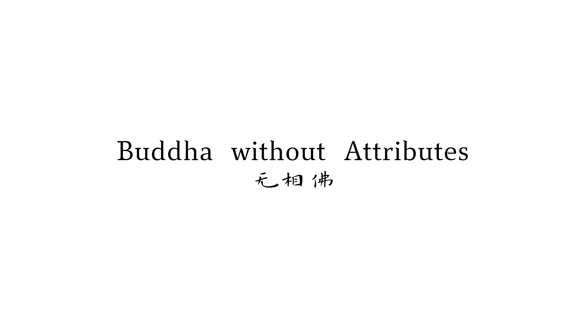
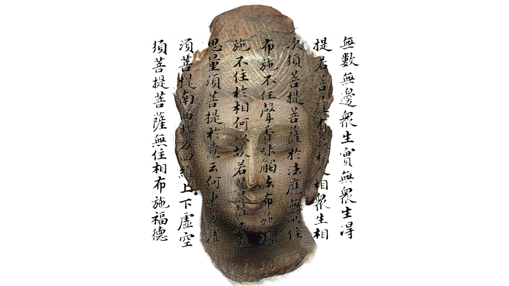

Vimeo Video
Deep learning of a set of 1,000 images of Buddha's faces using StyleGAN2 technology resulted in a beautiful video. In this video, different faces of Buddha slowly emerge from the chaos, gradually become clear and real, and then slowly disappear back into the chaos. The process goes on and on, like a dream, like dew, or like lightning. All of these changes are false and unreal, such is the nature of the universe.
Images
 Buddha has no specific appearance, takes on the appearance of all being’s as its appearance.
All forms are false. If you see the signs, you will see the Tathagata.
The process goes on and on, like a dream, like dew, or like Lightning.
All of these changes are false and unreal, such is the nature of the universe.